How Grimmor looks, moves and speaks on Instagram and TikTok — and what works on each platform right now. Read it before your first shoot. Keep it open while you edit.
This document is for everyone who makes content for or with Grimmor: photographers, videographers, editors, creators and agencies.
Colour, type, logo, photography grade, disclosure and the approval process. These are the same for every creator, every post.
Your face, your voice, your styling ideas, your locations. We hire you for your eye. These guidelines keep your work recognisably Grimmor, not identical to everyone else's.
Grimmor is a fashion social-commerce app — "the global closet". A feed of full-look photography, a model-free virtual Fitting Room, brand shopping, and an AI stylist called Mira, in one editorial interface.
Exact tailoring, clean lines, one idea per frame. Nothing accidental in the picture.
We don't explain, beg or shout. The clothes and the attitude carry the message.
White space, cool light, few words. Restraint is what makes Grimmor stand out in a loud feed.
| Line | Use |
|---|---|
| THE GLOBAL CLOSET | Brand line. End cards, profile bio, brand films. |
| BUY LESS. WEAR MORE. | Campaign line. Campaign content only, signed by the symbol. |
What Instagram and TikTok reward in 2026, and how we apply it. Platforms change often — your Grimmor contact sends updates when they do.
| Topic | TikTok | What we do | |
|---|---|---|---|
| Role | Reels reach new people; carousels get the most engagement and saves; Stories keep followers close. | The For You feed rewards completion; search rewards clear keywords. | Reels and TikToks for discovery, carousels for products and styling, Stories daily. |
| First 3 seconds | The hook decides the Reel. | If viewers swipe in the first seconds, the video stops being shown. | Open on the strongest image of the look. Never a greeting, logo or intro. |
| Length | Under 90 seconds for reach to non-followers; Reels up to 3 minutes can be recommended. | About 21–34 s for completion; 60 s+ for search and how-tos. | Brand Reels 7–30 s. Styling how-tos 30–60 s. Never pad. |
| Sound off | A large share of people watch muted. On-screen text and subtitles keep the message. | Subtitles on every video with speech. Max 5 words of on-screen text per frame. | |
| Search | Keywords in captions, alt text and on-screen text help discovery. | Keyword in the first 3–5 words of the caption and on screen in the first 3 s. | Name the garment in plain words early: "ivory suit", "long wool coat". |
| Caption | Only the first line shows before "more". | 150–225 characters fit without truncation. | Line one does the work. See chapter 13. |
| Hashtags | 3–5 specific tags beat long lists. | #Grimmor plus 2–4 specific tags. | |
| Originality | Reposts and videos with other apps' watermarks lose reach. AI-generated people must carry Instagram's AI label. | Original footage performs best. | Export a clean file for each platform. Never post a TikTok-watermarked file on Instagram. |
| Grid | The profile grid crops every post to 3:4. 3:4 (1080 × 1440) posts are not cropped. | — | Shoot and post feed images at 3:4. |
Sources (October 2026): Buffer — Instagram algorithm guide; Metricool — TikTok SEO guide 2026; creatorflow.so — Instagram algorithm changes 2026; zeely.ai and breakreach.com — Instagram safe zones; instantdm.com — Instagram size guide (September 2026); metadatareactor.com — TikTok caption length; posteverywhere.ai — Meta Reels ad safe zone.
Our photography is cool, precise and architectural: a calm studio or bare concrete, one person, one complete look. It should feel like an editorial page, not a selfie.
One person, one complete look. The full silhouette from head to shoe is visible in the opening shot. Still, confident poses — hands in pockets, a slow step, a turn. No pulling faces, no pointing at the camera, no dancing trends.
Vertical, always. Shoot 9:16 for video and 3:4 for stills. Camera level, at chest height or slightly below. Leave clean space above the head for a headline.
A seamless pale-grey studio, or daylight on concrete and stone. Soft, cool, even light. Nothing behind the look: no streets, cars, crowds, interiors or patterns.
Grimmor styling often carries one vermilion accent in the clothes — a belt, a scarf, a collar lining, a drape. One, never two. When it is in the clothes, keep vermilion out of the graphics on that frame.
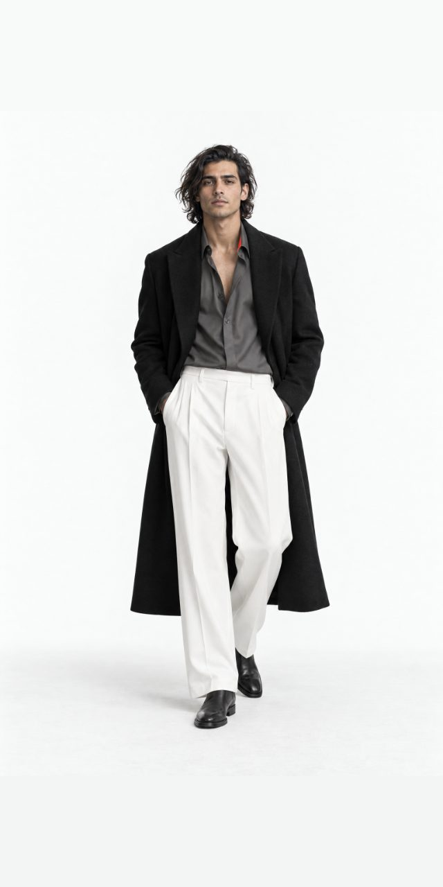
Full silhouette, head to toe, on a calm ground.
Crop the head or feet off the look.
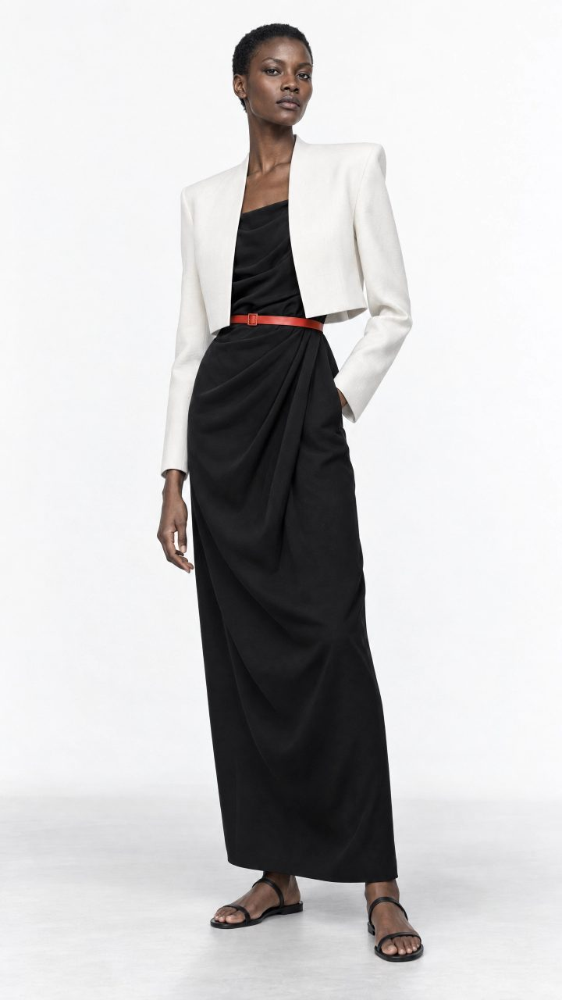
Warm, vintage or golden-hour filters.
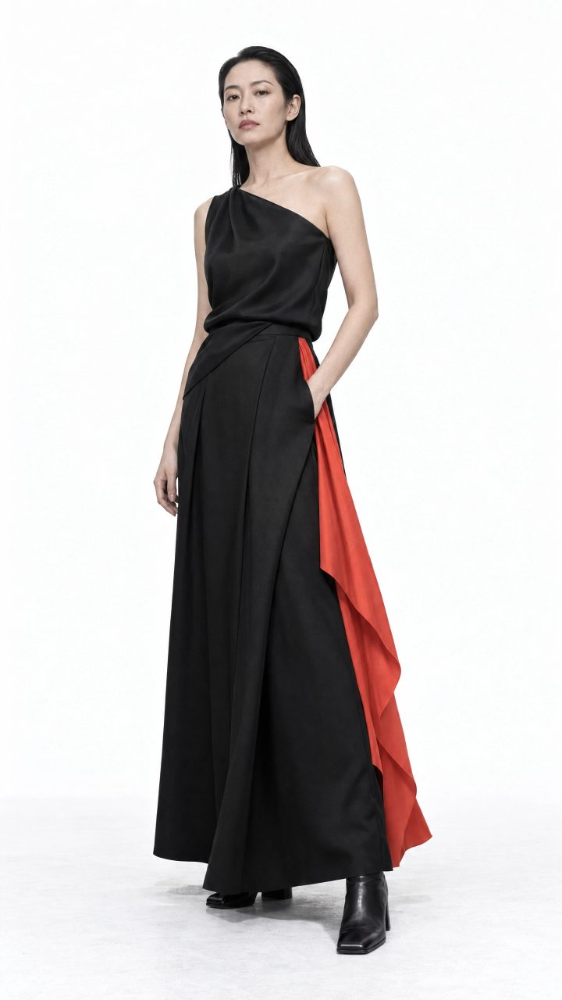
Vignettes, grain or blur effects.
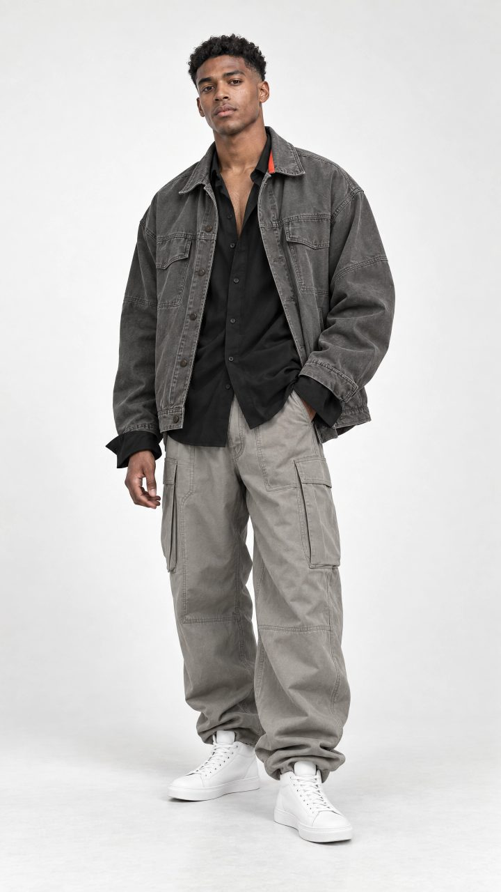
Studio or concrete. Nothing competes with the look.
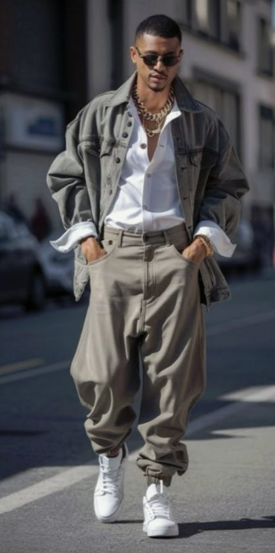
Let the figure invade the picture's margins. Keep the margins for the background.
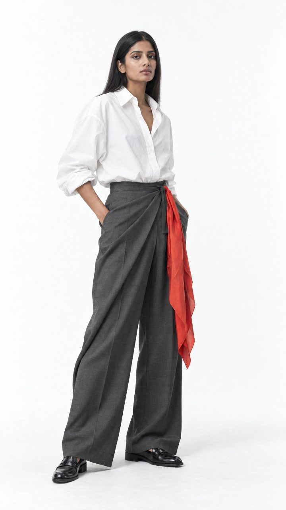
One vermilion accent, carried by the clothes.
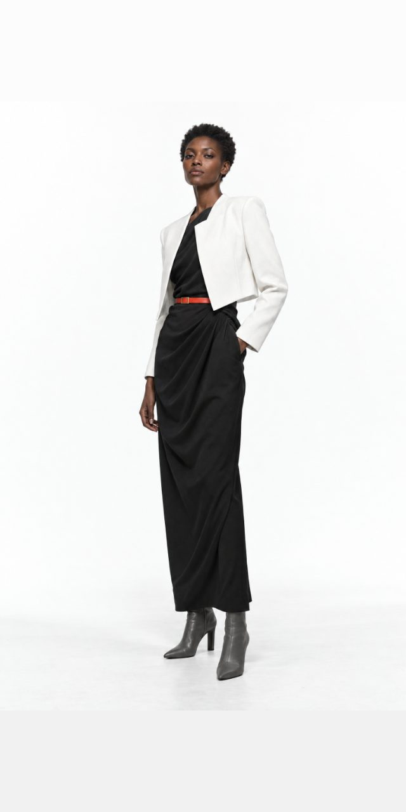
Tilted, fisheye or extreme low angles.
White and ink are the grounds for text frames, end cards and plates. Vermilion is the decision colour: the symbol, one word, Mira's bubble, or one tile in nine on the grid. Never two vermilion elements in one frame, never vermilion type for long text, never gradients or a second accent colour.
The clothes bring the colour. If a garment is red or orange, leave vermilion out of that frame entirely.
Two typefaces do all the work: Jost speaks for the brand, DM Sans gives information. Cormorant Garamond Italic is a rare editorial accent. All three are free on Google Fonts.
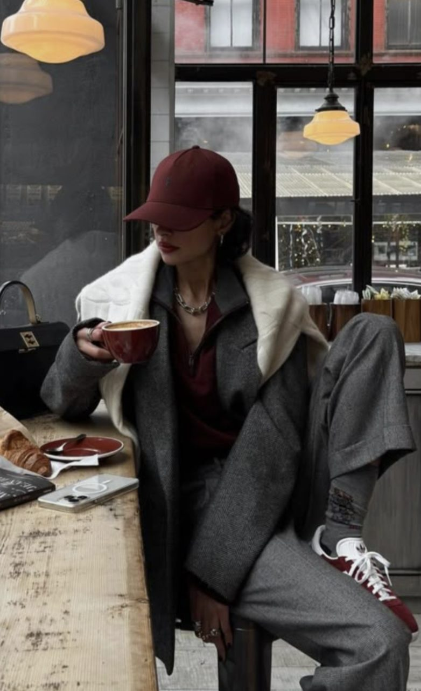
New in · 01The long| Role | Font | Size on 1080 px | Rules |
|---|---|---|---|
| Headline | Jost Medium | 96–120 px · line 1.0 · tracking −1% | UPPERCASE. 5 words max, 2–3 lines. Left-aligned at the 96 px margin. |
| Eyebrow | DM Sans SemiBold | 28 px · tracking +18% | UPPERCASE. Above a headline: "NEW IN · 01", "THE EDIT". |
| Accent | Cormorant Garamond Italic | Same size as the headline | Lowercase. One word or phrase, once per campaign. |
| Subtitle | DM Sans Medium | 44 px · line 1.3 | Sentence case. White on an ink plate. 2 lines, ~32 characters per line. See chapter 10. |
| Credit & price | DM Sans Medium | 32–36 px | "Coat · Brand · €640.00". Two decimals. |
| CTA | DM Sans SemiBold | 30 px · tracking +14% | UPPERCASE in an ink or white plate. App verbs only. |
No more than 5 words on screen in any frame. Alignment: left by default. Centre only on end cards and typographic covers. Maximum two families per frame (Jost + DM Sans, or Jost + Cormorant). No outlines, shadows, glows, gradients, 3D or animated letter effects. Text animates in with a simple fade or cut, never bounces or types on.
Jost, uppercase, on clean space above the figure.
Platform fonts, script fonts, colour, outlines.
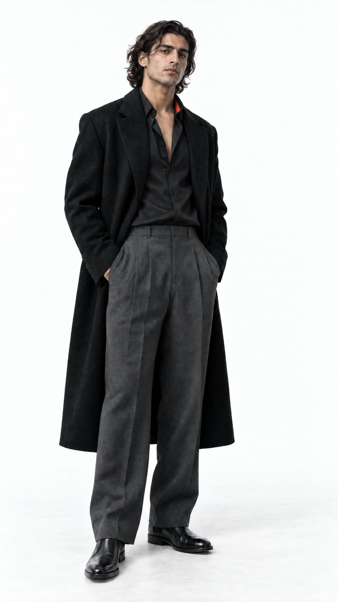
The quietA dark gradient behind type.
Paragraphs on screen. Five words, then cut.
The Grimmor symbol is the Twist. It signs Grimmor's own campaign content. On your own channels you don't use our logo — you tag @grimmor.
| Content | Logo | Tag |
|---|---|---|
| Grimmor-commissioned campaign film or post | The wordmark centred on the closing frame over a calm ground, or the Twist bottom-left on an end card — from the files we supply | @grimmor in caption |
| Your own post featuring Grimmor | None | @grimmor in caption, product tags on items |
| Screen recording of the app | None added — the app shows the brand | @grimmor in caption |
Use only the supplied files: white, ink or vermilion. Clear space around the logo is a quarter of its height. Symbol minimum 64 px, wordmark minimum 400 px wide on a 1080 px frame.
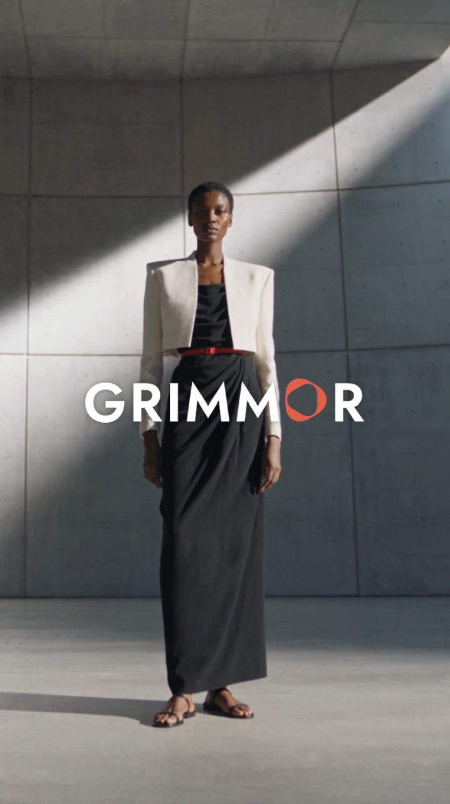
Wordmark centred on the closing frame. Calm concrete, nothing busy behind it.
Supplied Twist file, one colour, clear space.
Stretch, rotate, recolour or add effects.
Place it over a busy photo or a creator's image.
Hatched areas are covered by the platform's buttons, captions and username. Keep text, the logo and CTAs out of them.
| Format | Size | Notes |
|---|---|---|
| Reel / TikTok | 1080 × 1920, 9:16 | The app covers about the top 14% and bottom 35%. Keep text in the middle. |
| Story | 1080 × 1920, 9:16 | Same safe zone as Reels: 270 px top, 670 px bottom. One sticker per frame. |
| Feed post | 1080 × 1440, 3:4 | Shows uncropped in feed and grid. Use 1080 × 1350 (4:5) only for paid ads. |
| Carousel | 1080 × 1440 per slide | Slide 1 sets the ratio for all. Up to 20 slides allowed; we use 3–10. |
| Reel cover | 1080 × 1920 | Headline and figure inside the centre 1080 × 1440. |
Structure: Hook → Detail → Close. One idea per video. Hard cuts on the beat, every 2–4 seconds. Slow push-ins; no whip pans, glitches, zoom bursts or shakes.
| Rule | Spec |
|---|---|
| Position | One fixed position for the whole video — never moving between shots. Full-look shots: the clear band above the head. Talking or voiceover shots: a band at 60–65% of frame height, over the torso, below the chin. Never on the face. |
| Lines | 2 lines max. About 32 characters per line. |
| Line breaks | Break at punctuation or between phrases — never inside one. "Swap to ivory / after dark", not "Swap to / ivory after dark". |
| Timing | Max 17 characters per second. Each subtitle on screen 1–7 seconds. |
| Type | DM Sans Medium, 44 px, white on a solid ink plate. Survives platform compression. |
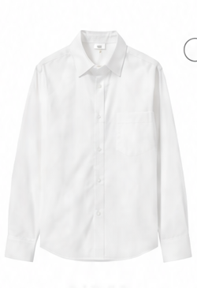
Pick a top from your closet.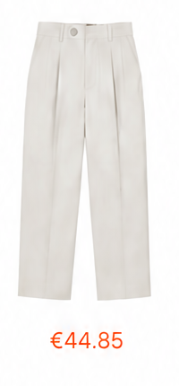
Add trousers. Mira checks the fit.Carousels get the most saves and engagement on Instagram. Slide 1 is the cover, the middle slides add one thing each, the last slide asks for one action.
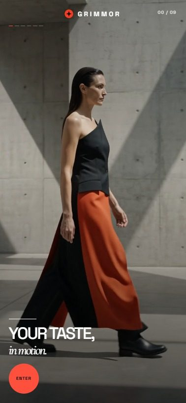
Stories are daily and close: new arrivals, behind the scenes, Mira's notes, polls, try-ons. One message per frame, 3–6 frames per sequence, CTA on the last frame.
The first line is all most people read before "more". Make it count, then add what the picture can't say.
| Part | Rule |
|---|---|
| 1 · Hook | Instagram: 5 words or fewer, UPPERCASE — the same limit as on-screen text. TikTok: start with the search phrase in sentence case. |
| 2 · Body | 1–2 sentences. Name the garment in plain, searchable words. |
| 3 · Credits | Item · Brand · €000.00, one line per item. |
| 4 · CTA | One. App verbs, or one specific either/or question. |
| 5 · Hashtags | 3–5 at the end. Always #Grimmor. |
No emoji — the middle dot · is our only separator. No exclamation marks, no "link in bio" arrows, no tagging walls. Instagram: under 300 characters before credits. TikTok: 150–225 characters total.
Case 1 · Campaign Reel · Instagram
BUY LESS. WEAR MORE.
One long wool coat, worn every day from October to March.
Coat · Grimmor Edit · €640.00
Shop the look — link in bio.
#Grimmor #BuyLessWearMore #WoolCoat
Case 2 · Product carousel · Instagram
NEW IN. THE IVORY JACKET.
A cropped ivory jacket, a draped black dress and flat leather sandals. Swipe for each piece.
Jacket · Grimmor Edit · €420.00
Dress · Grimmor Edit · €380.00
Sandal · Grimmor Edit · €190.00
Tap a product tag to shop.
#Grimmor #TheGlobalCloset #NewIn
Case 3 · Styling how-to · TikTok
How to style a long black coat two ways: charcoal trousers for day, ivory for evening. Only one piece changes.
Try it on in the Grimmor Fitting Room.
#Grimmor #BlackCoat #StylingTips
Case 4 · Creator partnership · Instagram (Paid partnership label on)
MY ONLY COAT THIS WINTER.
I tried the long wool coat in the @grimmor Fitting Room before I ordered it. Fit was exactly what I saw.
Coat · Grimmor Edit · €640.00
Try it on in the Fitting Room.
#Grimmor #ad #WinterCoat
Case 5 · Community question · Instagram
LOAFER OR BOOT?
Same trousers, two shoes. Tell us which one you'd wear.
#Grimmor #TheGlobalCloset
Case 6 · App feature · Instagram + TikTok
NEW IN THE FITTING ROOM.
You can now build a full look from your closet and try it on before you buy. Update Grimmor to version 4.2.
Update the app — link in bio.
#Grimmor #FittingRoom
Case 7 · Repost of a member's look · Instagram
THE CUT DOES THE WORK.
Black tailoring, nothing else. Photo @handle
Shop similar in the app.
#Grimmor #TheGlobalCloset
Case 8 · Ask Mira · TikTok
What to wear with cream trousers, according to Mira. A dark polo and white trainers — tonal on top, one sporty note at the foot.
Ask Mira in the Grimmor app.
#Grimmor #AIStylist #CreamTrousers
| Write | Avoid |
|---|---|
| BUY LESS. WEAR MORE. | OMG you NEED this coat!! |
| One long wool coat, worn every day. | Obsessed with this vibe tbh |
| Shop the look — link in bio. | Link in bio, go go go |
| Loafer or boot? | Thoughts?? Let me know in the comments below |
SHOP THE LOOK · TRY IT ON IN THE FITTING ROOM · ASK MIRA · SAVE THIS LOOK · ADD TO CLOSET · DOWNLOAD GRIMMOR · UPDATE THE APP
On screen: uppercase in an ink or white plate. In captions: as a sentence — "Shop the look — link in bio."
Always: #Grimmor
Brand: #TheGlobalCloset · campaign: #BuyLessWearMore
Specific: the garment or topic — #WoolCoat, #BlackSuit, #StylingTips
Paid: #ad alongside the platform label
No banned, unrelated or trending-only tags. Never more than 5.
Grimmor has two voices. Brand voice creates desire. Product voice helps someone do something. Creators speak in their own words — inside these limits.
| Situation | Voice | Example |
|---|---|---|
| Headline, hook, campaign | Brand — short, confident | THE QUIET UNIFORM. |
| Explaining a feature or how-to | Product — plain, exact | Pick a top, add trousers, then tap Try On. |
| Comment: praise | Brand, one line | It's the cut. Thank you. |
| Comment: question | Product | Yes, sizes 34–46. Tap the product tag to see stock. |
| Complaint, order or account | Don't answer — redirect | Please message @grimmor directly. They'll sort it out. |
Every paid or gifted post carries the platform's paid-partnership label and #ad. No exceptions, no hiding it in the hashtags.
Music must be licensed for commercial use. Everyone shown has signed a release. Locations are permitted. Reposts need written permission from the creator.
No competitor logos in shot, no alcohol, smoking, political or sensitive content alongside Grimmor, no prices or discounts that aren't in the brief.
| Item | Spec |
|---|---|
| Video | MP4, H.264, 1080 × 1920, 30 fps, AAC audio 48 kHz. No platform watermark. Plus a version without burned-in subtitles. |
| Stills | JPG or PNG, sRGB, 1080 × 1440 minimum (3:4). Original high-res files as well. |
| Copy | Caption, hashtags, alt text and subtitles as plain text. |
| File names | GRIMMOR_campaign_creator_format_v01 — e.g. GRIMMOR_winter26_lena_reel_v01.mp4 |
| Approval | Submit 72 hours before publishing. Up to 2 rounds of changes. Publish only after written approval. |
| Alt text | Plain description of the look: "Woman in an ivory suit and black knit, standing against a concrete wall." |